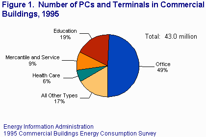
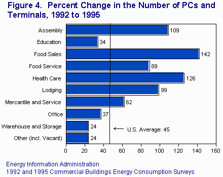

Personal Computers and Computer Terminals
in Commercial Buildings
- PCs and Computer Terminals in 1995
- Changes Between 1992 and 1995
- How the Number of PCs and Computer Terminals Were Estimated
- References and Additional Links
Over the past 10 to 15 years, the use of personal computers (PCs) has risen dramatically. The energy consumed by PCs and other types of office equipment has become a significant component of electricity consumption in commercial buildings -- 13 percent (98 billion kWh) of all electricity consumed in 1995. That amount was nearly
as much as the amount used to air condition these buildings. The Energy
Information Administration's
1999 Annual Energy Outlook[1]
forecasts
that, for the next two decades, electricity consumption for
office equipment (3.2 percent annually) will grow over twice as fast as electricity
use as a whole (1.4 percent annually).
PCs and Computer Terminals in 1995
|  |
| Table and more figures: |
In 1995, an estimated 43.0 million PCs and computer terminals were used in commercial buildings. More than half of the 4.6 million buildings in the United States had at least one PC or computer terminal. On average, there were 571 PCs and computer terminals per thousand employees, and 732 PCs and computer terminals per million square feet of floorspace.
Nearly half (21.2 million) of all PCs and computer terminals were located in office buildings. Those buildings contained 4 PCs and computer terminals for every 5 employees (797 per thousand employees). Among office buildings, the larger buildings (over 50,000 square feet) contained 13.3 million PCs and computer terminals, and 833 per thousand workers.
Education buildings also had a large number of PCs and computer terminals (8.0 million). There were 847 PCs and computer terminals per thousand employees, the highest ratio for any commercial building activity. However, that ratio does not include students, and so it excludes a large number of potential users. In 1995, the total seating capacity of education buildings was 85 million. If the PC-to-employee ratio were recalculated with even a fraction of the number of seats added to the number of employees, the ratio of PCs and computer terminals to thousand users would be much lower.
The more PCs and computer terminals used in a given building, the greater the impact on the building's energy consumption. By this measure, PCs and terminals clearly had their greatest impact on energy consumption in office buildings. In 1995, there were 2,021 PCs and computer terminals per million square feet in office buildings. Education buildings and health care buildings each had slightly more than 1,000 PCs and terminals per million square feet.
Changes Between 1992 and 1995
|  |
| Table and more figures: |
In 3 years, the number of PCs and computer terminals used in commercial buildings increased by 45 percent, from 29.8 million in 1992 to 43.0 in 1995. Growth rates were considerably higher among the types of buildings that had relatively fewer PCs and computer terminals in 1992. The number of PCs and computer terminals used in mercantile and service buildings increased by 62 percent from 1992 to 1995. The number used in health care buildings more than doubled, from 1.1 million to 2.5 million. Sharp increases (from 89 to 146 percent) also occurred in assembly, lodging, food sales, and food service buildings. Growth rates were lower (but still over 30 percent) for office and education buildings, the two types of buildings that already had substantial numbers of PCs and computer terminals in 1992.
PCs are a relatively recent technology, and surveys are capturing this technology as it penetrates the commercial buildings sector. Office and education buildings adopted the technology earlier but, as PC applications grew, PCs and computer terminals became important in other types of buildings as well. How far will this technology penetrate? At what point will the market become saturated? In office buildings, the number of PCs and computer terminals is already approaching one per person. One per person would seem to be the natural saturation point (for office buildings at least). However, use of multiple PCs, or both a PC and a computer terminal, is not uncommon. Future data collections might answer these questions.
|
The estimates presented in this document are not derived from sales data. All data were collected by the Energy Information Administration's Commercial Buildings Energy Consumption Survey (CBECS).[2] The CBECS estimates are based on a national sample of approximately 6,000 commercial buildings. The CBECS web page contains more details on the survey, additional reports, and public use data files at the building level (ASCII and dBase format) that can be downloaded. The 1999 CBECS data collection will begin in late 1999. Both the 1992 and 1995 CBECS questionnaires asked whether any PCs or computer terminals were in the sampled building and, if so, how many. The response was recorded in one of 11 categories, ranging from "1 to 4" to "5,000 or more." A weighted mean of the upper and lower category bounds was used to estimate the actual number of PCs and computer terminals. The weights were the number of buildings in the categories above and below the one being estimated. The use of these weights captured the shape of the distribution better than a simple average of the upper and lower bounds could. The estimates derived by this method are consistent with other estimates for the numbers of PCs in commercial buildings. Researchers at Lawrence Berkeley National Laboratory (LBNL 1995)[3] estimated, using sales data, that there were 28.9 million PCs in commercial buildings in 1992, and 41.4 million in 1995. The LBNL numbers are lower than the CBECS estimates, as would be expected since the CBECS estimates include computer terminals. The LBNL researchers cited similar estimates from Dataquest, 29.1 million in 1992 and 40.9 million in 1995. |
 Top of Page
Top of Page
 Commercial Buildings Page
Commercial Buildings Page
File Last Modified: April 20, 1999
- Contact:
- alan.swenson@eia.doe.gov
- Alan Swenson
- Alan Swenson
For help with technical problems, please contact the webmaster: wmaster@eia.doe.gov
Phone: (202) 586-8959